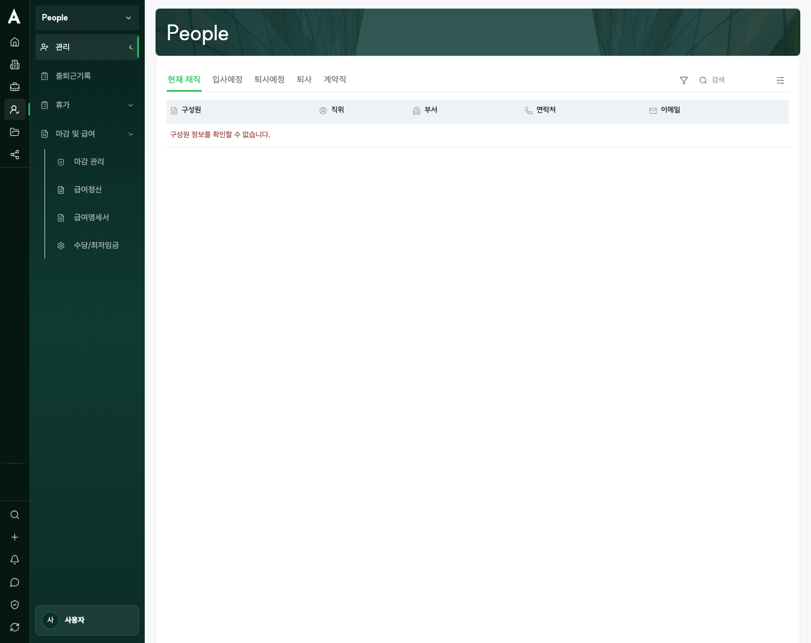
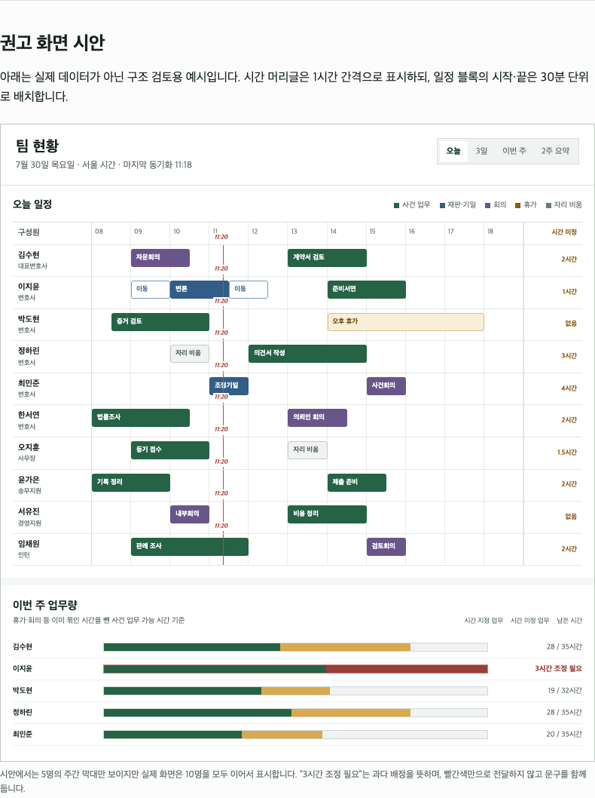
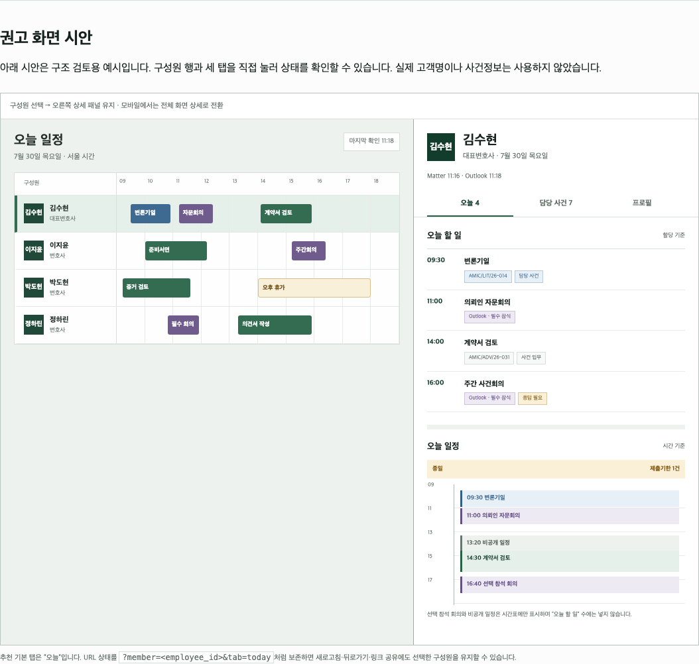

구성원·조직·채용·입퇴사·근태·휴가·급여 API와 화면이 이미 있습니다. 각 항목을 현행 확인 → 결함 보강 → 외부 증거로 재분류하고 기존 상태 머신을 유지합니다.
LAW FIRM OS · PEOPLE · IMPLEMENTATION PLAN V2 · 2026-07-30
People 전체 메뉴 구현계획 v2
10명 안팎의 로펌이 실제로 쓰는 팀 현황, 구성원별 오늘 일정·업무, 담당 사건, 근태·휴가·마감 흐름을 기존 코드 위에 증분 구현하는 계획입니다. 이전 43개 안을 코드와 테스트에 다시 대조해, 신규 개발로 잘못 분류한 급여·휴가·입퇴사 기능은 재사용·보강으로 돌리고 과대 작업은 검증 가능한 단위로 나눴습니다.
구현 작업70 TUW
독립 출시 흐름8개
별도 운영 게이트7개
사이드바 계약일반 11 / 권한형 16
v1에서 바로잡은 핵심
계획을 길게 만든 것이 아니라, 구현 사실과 권위 데이터, 실패 조건을 더 정확히 고쳤습니다.
10분·20분 일정도 정확히 겹침 계산합니다. 시간표의 30분 눈금은 읽기 보조일 뿐이며, 08:00–19:00 고정 범위도 실제 일정에 맞춰 자동 확장합니다.
people-overview를 People 진입 기본값으로 추가하지만 사이드바 항목은 만들지 않습니다. 기존 구성원 메뉴는 people-members 그대로 유지합니다.
현재 유효한 MatterMember.role=responsible_attorney와 확정된 employee_id만 사용합니다. 자유 텍스트 담당자, Matter 열람권한, 업무 담당자는 재판 담당 판정에 쓰지 않습니다.
필수 참석·미거절·미취소 회의만 오늘 할 일에 넣습니다. 선택 참석과 주최자 단독 일정은 시간표에만 표시하고, 타인의 일정 제목·장소·본문은 공개하지 않습니다.
현재 불변 마감 모델을 유지합니다. 마감 뒤 오류는 기존 adjustment 실행으로 정정하며, 화면 문구도 “마감 취소” 대신 정정 정산 시작으로 바꿉니다.
이번 계획에 넣지 않은 것
인원 증감·입사자·퇴사자 KPI, 일별 업무량 퍼센트, 전사 HR 분석, “커버리지 매트릭스” 같은 번역투,
숨겨 둔 근무일정·리포트·메시지·전자계약·회사 설정 메뉴의 활성화는 범위 밖입니다.
범위와 사이드바 계약
기능은 활성 화면 안의 탭·상세 패널·내부 기본 경로로 확장합니다. 사이드바는 현재 노출 상태를 그대로 고정합니다.
일반 사용자에게 보이는 11개
구성원, 조직, 구성원 등록, 입퇴사 관리, 출퇴근기록, 휴가관리, 휴가 사용 내역, 마감 관리, 급여정산, 급여명세서, 수당/최저임금
권한이 있을 때 추가되는 5개
휴가 그룹/유형, 휴가 자동 발생, 퇴사 휴가 정산, 휴가 요청, 연차 사용 촉진
계속 비활성
근무일정 전체, 직무/역할, 근로정보, 근로정보 기준, 무일정 근무 출퇴근, 엑셀 업로드, 휴게시간 기록, 누락 알림, 출퇴근기록 확정, 인증 방식, 휴가 수동 발생
그룹 단위로 계속 숨김
기타 요청/전자결재, People 리포트, 메시지, 전자계약, 회사 설정, HR Data Room 및 현재 비활성 계획
현재 코드에서 확인된 구현
다음은 계획이 아니라 현재 저장소에 존재하는 컴포넌트·API·도메인입니다. v2는 이 기반을 우선 재사용합니다.
| 영역 | 현재 구현 | 실제 공백 | 주요 코드 |
|---|---|---|---|
| 구성원·조직 | 목록, 조직 보기, 선택, 상세 drawer, 마스킹 보상정보, Employee↔User API | 오늘/담당 사건 탭, 예정 변경 UX, 무결성 대사 | PeopleHome.tsxPeopleWorkforceDirectory.tsxEmployeeProfile.tsx |
| 구성원 등록 | 채용 파이프라인, 후보자, 면접, 제안, 구성원 전환 | 직접 등록 우선 UX, 동의·최소수집, 전환 멱등성 증거 | RecruitingPipeline.tsxroutes/hrx/recruiting.js |
| 입퇴사 | 입사 업무 완료, 접근 회수·문서·법적 보류·Matter 재배정·인계·휴가 정산 종료 조건 | 버전 기준, 실행 항목 영속성, 실제 처리 경로 연결 | onboarding.jsoffboarding.jsLifecycleBoard.tsx |
| 출퇴근 | 일별 기록, 월 요약, 원본 참조 정정 레코드, 저장·재조회 | 정정 승인, 초과근로 인계, 활성 화면 내 탭 | attendance.jshrx-runtime-context.jsAttendanceWorkspace.tsx |
| 휴가 | 정책, 신청·승인, 자동/수동 발생, 사용내역, 퇴사정산, 촉진, 외부 일정 투영 | 팀 시간표 연결, 사유 가림, 메뉴별 실제 처리·통지 증거 | people/leave/*packages/hrx/src/leave/* |
| 급여 | 기간, 기준본, 계산, 이슈, 이중 승인, 마감, 지급, 신고, 연말정산, 명세서 | 마감 전 통합 점검, 전용 마감/수당 화면, 실제 외부 서비스와 운영 증거 | PayrollBoundaryPanel.tsxpackages/hrx/src/payroll/* |
| 팀 현황 | People overview는 단순 인원 수, Matter 화면에는 일정·업무 존재 | People용 Matter 집계, 구성원 오늘 조회, 시간표, Outlook | fetchHrxPeopleOverviewMatterTaskMatterCalendarEvent |
화면 방향
기존 화면을 갈아엎기보다 People 기본 경로와 현재 구성원 상세 drawer를 확장합니다.



8개 독립 출시 흐름
Outlook·급여 외부 서비스 연결이 늦어져도 Matter 기반 팀 현황은 별도로 출시할 수 있습니다.
R0
사실·메뉴·권한 고정
TUW 001–006기존 구현과 사이드바, 응답 상태, 권한 필터를 먼저 고정
R1
Matter 데이터 정비
TUW 007–015담당자·일정 종류·업무 시간 필드를 안전하게 전환
R2
팀 현황과 개인 상세
TUW 016–029 + 030 후속Outlook 없이도 오늘 업무·담당 재판·담당 사건을 사용. 남은 가능 시간(030)은 근로정보·휴가 검증 뒤 후속 활성화
R3
Outlook 일정
TUW 031–038사용자 동의, 보안 저장, 일정 판정, 부분 실패를 독립 출시
R4
구성원·조직·등록·입퇴사
TUW 039–047이미 있는 HRX 흐름을 소규모 로펌 UX로 보강
R5
출퇴근
TUW 048–051기존 추가형 정정 모델을 승인·활성 화면으로 완성. 급여 인계(050)는 급여 기능 대조 뒤 활성화
R6
휴가
TUW 052–059팀 일정 반영과 활성 메뉴별 처리·권한·통지 결과를 검증
R7
마감·급여
TUW 060–070기존 급여 처리 흐름을 재사용해 전용 화면과 외부 처리 증거를 보강
가장 짧은 사용자 가치 경로
001 → 002 → 004 → 005 → 007–015 → 016 → 017 → 019 → 027–029.
이 경로가 끝나면 Outlook 없이도 팀원을 클릭해 오늘 사건 업무·담당 재판·담당 Matter를 확인할 수 있습니다.
70개 검증 가능한 작업 단위
각 TUW는 현행 근거, 변경 범위, 자동 검증, 수동 증거, 롤백 조건을 갖습니다. 행을 열면 세부 내용을 볼 수 있습니다.
테스트 파일 표기 원칙
현재 존재하는 테스트는 그대로 재사용합니다.
people-*, outlook-*처럼 새 경로로 적힌 테스트와
web:e2e 사례 이름은 해당 TUW가 반드시 함께 추가해야 할 산출물이며, 지금 실행 가능하다고 주장하는 목록이 아닙니다.
구현 TUW와 분리한 7개 운영 게이트
로컬 테스트, 배포, 외부 서비스, 실제 tenant, 운영 승인을 서로 다른 완료선으로 관리합니다.
RG-01
단위 PR 게이트
해당 TUW의 지정 테스트, 허용·거부·가림·직접 URL 실패 경로 검사, 변경 파일 lint/typecheck, 실행 결과 기록이 있어야 merge 후보가 됩니다.
RG-02
Matter 팀 현황 출시
people_team_operations flag 아래 10명 fixture와 권한 제한 fixture를 검증하고, Outlook 없이 별도 승인합니다.
RG-03
Outlook 연결 준비
M365 관리자 승인, 사용자별 Calendars.ReadBasic 동의, 토큰 보관, 철회, Graph 시험 환경, 개인정보 검토가 모두 확인돼야 기능을 켭니다.
RG-04
People 활성 메뉴 회귀
일반 11개/권한형 16개, 비활성 메뉴 0건, loading·empty·error·denied·partial, 키보드·모바일·한국어 카피를 누적 검증합니다.
RG-05
급여 외부 서비스 준비
시험 데이터 통과는 운영 준비가 아닙니다. 은행·신고·전달 서비스별 시험 환경 결과와 안전한 실패 처리를 별도로 승인합니다.
RG-06
정확한 main·패키지·API
동일 SHA의 web build, desktop package hash, API/Lambda version, 로그인 세션 재시작 후 핵심 흐름을 확인합니다.
RG-07
실제 tenant 운영 승인
실제 10명 명부, 담당 재판 표본, 필수 참석 회의, 휴가·근태·급여 대사와 rollback 담당자를 기록한 뒤 소유자가 승인합니다.
누적 검증 명령
npm --workspace apps/web run test:ui npm --workspace apps/api run test npm test npm run hrx:authz:validate npm run hrx:security:validate npm run hrx:ui:validate npm run hrx:release:validate npm run hrx:no-premature-claim:validate npm run build npm run matter-desktop:dashboard-package-qa
오픈소스·공식 API 근거와 적용 범위
참고 제품의 화면을 복제하지 않고, 검증된 도메인 경계와 실패 규칙만 가져옵니다.
ERPNext Employee
Employee와 User를 분리하고 활성 사용자 연결 중복을 차단하는 패턴
SHA 고정 소스 · TUW 007, 039–041
Frappe HRMS Onboarding
기준에서 실행 업무를 만들고 필수 업무를 완료해야 다음 상태로 이동하는 패턴
SHA 고정 소스 · TUW 046–047
Frappe HRMS Check-in
원본 타각을 직접 고치지 않고 중복·연결 이후 변경을 차단하는 원칙
SHA 고정 소스 · TUW 048–051
Frappe HRMS Payroll
기간 상태와 계산을 분리하고 출퇴근 누락을 제출 전 차단하는 패턴
SHA 고정 소스 · TUW 060–063
Microsoft Graph
calendarView의 현지 시간대, 반복 일정, 페이지 이동과 attendee type/status 판정
calendarView · attendee · TUW 031–038
OpenProject Team Planner
사람을 행으로 두고 업무를 시간축에 놓는 팀 계획 패턴. Law Firm OS는 분 단위 일정과 개인정보 가림을 추가
공식 문서 · TUW 022–026
계획 완료의 의미
이 문서는 구현 순서와 테스트 경계를 확정한 설계 산출물입니다. 제품 코드, 배포, 실제 Outlook·은행·신고 연결은 아직 변경하지 않았습니다.
첫 구현 PR은 PEO-TUW-001과 PEO-TUW-002로 현재 사실과 사이드바 계약을 고정한 뒤 시작합니다.